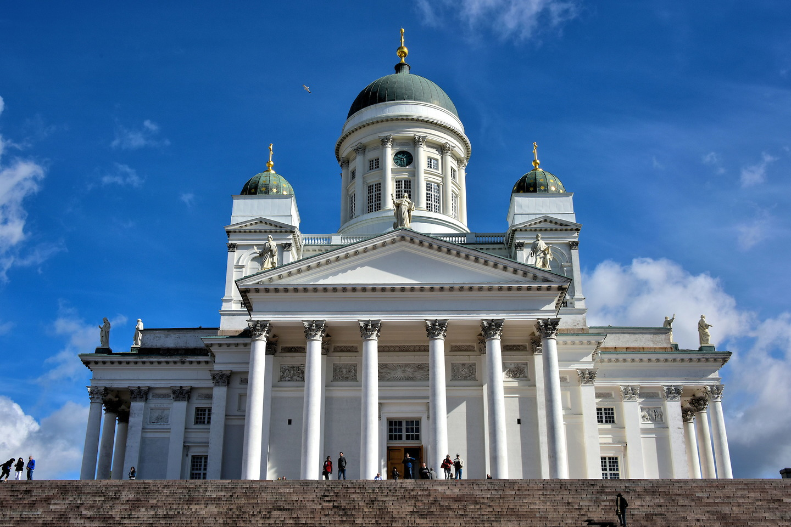

Finlandia adalah sebuah negara yang terletak di wilayah Nordik di Eropa Utara. Negara ini berbatasan dengan Swedia di barat, Norwegia di utara, dan Rusia di timur. Finlandia juga memiliki garis pantai yang panjang di sebelah selatan, menghadap ke Laut Baltik.
Kota Tua Porvoo
Kota Tua Porvoo, atau "Vanha Porvoo" dalam bahasa Finlandia, adalah salah satu situs bersejarah yang paling menarik di Finlandia.
Berikut adalah sejarah singkat Kota Tua Porvoo:
Pendirian Awal : Porvoo adalah salah satu kota tertua di Finlandia, dan pendiriannya dapat ditelusuri hingga abad ke-13. Pada masa itu, kota ini merupakan pusat perdagangan yang penting.
Kota Tua Berusia Lama : Kota Tua Porvoo adalah salah satu kota tua terbaik yang masih ada di Finlandia. Bangunan-bangunan kayu yang indah yang terletak di tepi Sungai Porvoo adalah ciri khas kota ini.
Katedral Porvoo : Salah satu daya tarik utama di Kota Tua Porvoo adalah Katedral Porvoo (Porvoon tuomiokirkko). Katedral ini adalah salah satu yang tertua di Finlandia, dengan sejarah yang mencapai lebih dari 700 tahun.
Warna-Warni Rumah-Rumah : Salah satu ciri khas Kota Tua Porvoo adalah rumah-rumah berwarna-warni yang menghadap sungai. Rumah-rumah ini memiliki cat berwarna merah, kuning, dan oranye yang menciptakan pemandangan yang indah.
Tempat Bersejarah : Kota Tua Porvoo telah menjadi tempat penting dalam sejarah Finlandia. Pada tahun 1809, di Gedung Porvoo di sini, sebuah deklarasi yang mengakui Finlandia sebagai wilayah otonom dalam Kekaisaran Rusia ditandatangani, yang dikenal sebagai "Deklarasi Porvoo."
Pemugaran : Meskipun Kota Tua Porvoo memiliki sejarah yang panjang, banyak dari bangunan-bangunan kayu tersebut telah mengalami pemugaran dan perbaikan selama berabad-abad untuk mempertahankan penampilan mereka yang asli.
Hari ini, Kota Tua Porvoo adalah tempat wisata yang populer di Finlandia. Pengunjung dapat berjalan-jalan di jalan-jalan berbatu, menjelajahi rumah-rumah bersejarah, dan mengunjungi Katedral Porvoo yang megah. Pemandangan Kota Tua Porvoo yang berwarna-warni dan atmosfer bersejarah menjadikannya salah satu tempat yang paling menarik di negara ini.
Katedral Helsinki

Katedral Helsinki (Helsingin tuomiokirkko) adalah salah satu landmark paling terkenal di ibu kota Finlandia.
Berikut adalah sejarah singkat Katedral Helsinki:
Pembangunan Awal : Katedral Helsinki dibangun pada awal abad ke-19 sebagai bagian dari proyek pemindahan ibu kota Finlandia dari Turku ke Helsinki. Rencana pembangunannya dimulai pada tahun 1818 oleh Raja Swedia Carl Johan (atau Kekaisaran Rusia yang dikenal sebagai Tsar Alexander I).
Arsitektur : Katedral ini dirancang oleh arsitek Carl Ludvig Engel, seorang arsitek asal Jerman yang mengadopsi gaya arsitektur Neoklasik. Gaya arsitektur ini mencerminkan kecenderungan klasikisme Romawi dan Yunani, dengan pilar-pilar dan ornamen-ornamen yang sederhana namun megah.
Pembangunan Berlangsung Lama : Pembangunan Katedral Helsinki memakan waktu lebih dari dua puluh tahun. Itu diresmikan pada tahun 1852, beberapa tahun setelah kematian Carl Ludvig Engel.
Nama Lain: Katedral ini juga dikenal sebagai "Tuomiokirkko" dalam bahasa Finlandia dan "Helsingfors domkyrka" dalam bahasa Swedia.
Pentingnya Sejarah Finlandia : Katedral Helsinki telah menjadi saksi sejarah Finlandia yang signifikan. Pada tahun 1809, di dalam katedral ini, pasukan Swedia menyerahkan Finlandia kepada Kekaisaran Rusia selama Perang Finlandia. Ini adalah awal dari masa pemerintahan otonom Finlandia di bawah Kekaisaran Rusia.
Peran Agama : Selain menjadi tujuan wisata populer, Katedral Helsinki masih digunakan untuk upacara agama dan acara keagamaan. Ini adalah tempat yang penting untuk perayaan-perayaan agama, pernikahan, dan acara-acara gerejawi lainnya.
Monumen Ikonik : Katedral Helsinki adalah salah satu monumen paling ikonik dan dikenal di Finlandia. Terletak di Taman Senat di pusat kota Helsinki, katedral ini memiliki kubah yang menjulang tinggi dan menjadi landmark yang terkenal di kota ini.
Katedral Helsinki adalah salah satu contoh terbaik arsitektur Neoklasik di Finlandia dan memiliki peran penting dalam sejarah Finlandia. Ini juga merupakan salah satu tujuan wisata yang paling populer di Helsinki, menarik pengunjung dengan arsitektur megahnya dan pemandangan kota yang indah dari kubahnya.
Istana Olavinlinna
Istana Olavinlinna (Olavinlinna dalam bahasa Finlandia, atau Olofsborg dalam bahasa Swedia) adalah sebuah benteng yang terletak di kota Savonlinna, Finlandia Timur.
Berikut adalah sejarah singkat Istana Olavinlinna:
Pembangunan Awal : Istana Olavinlinna dibangun pada tahun 1475 oleh Raja Swedia Karl Knutsson untuk memperkuat posisi Swedia di wilayah perbatasan Finlandia dengan Rusia Novgorod. Benteng ini dibangun di atas sebuah pulau kecil di tengah Danau Saimaa untuk mengawasi perdagangan dan jalur air yang strategis.
Nama yang Menghormati Raja St. Olaf : Benteng ini dinamakan setelah Raja St. Olaf dari Norwegia, yang dianggap sebagai santo pelindung Swedia. Nama "Olavinlinna" berarti "Benteng St. Olaf" dalam bahasa Finlandia.
Peran Pertahanan : Selama sejarahnya, Istana Olavinlinna memiliki peran pertahanan yang penting dalam konflik antara Swedia dan Rusia. Benteng ini sering digunakan sebagai pos pertahanan untuk melindungi wilayah Swedia di Finlandia Timur.
Pemugaran dan Restorasi : Pada abad ke-18, benteng ini mengalami kerusakan parah selama Perang Utara Besar antara Swedia dan Rusia. Namun, pada abad ke-19, pemugaran besar-besaran dilakukan untuk mengembalikan kondisi benteng ini.
Pusat Seni dan Budaya : Saat ini, Istana Olavinlinna digunakan untuk berbagai acara seni dan budaya, yang paling terkenal adalah Festival Opera Savonlinna yang berlangsung setiap musim panas di dalamnya. Festival ini adalah salah satu festival opera terbesar di dunia dan menarik penonton dari seluruh dunia.
Museum dan Tempat Wisata : Selain perannya dalam seni dan budaya, Istana Olavinlinna juga berfungsi sebagai museum yang mengenalkan sejarah dan budaya benteng ini. Pengunjung dapat menjelajahi bangunan-bangunan kuno, menikmati pemandangan indah Danau Saimaa, dan mengenal lebih dekat sejarah benteng ini.
Istana Olavinlinna adalah salah satu benteng abad pertengahan yang paling terkenal dan menarik di Finlandia. Selain sebagai tempat seni dan budaya yang penting, benteng ini memiliki sejarah yang kaya dan menghadirkan pengalaman bersejarah bagi pengunjungnya.